6
Editing, Reusing, and Merging Display Resources
This chapter discusses the following topics:
- Using Display Resource Manager
- Using Display Resource Editor
- Editing Display Resource Data with SKILL Functions
- Editing a Display Resource File
- Testing a Display Resource File
Using Display Resource Manager
Display Resource Manager lets you manipulate display resources available in virtual memory during a design session.
Opening Display Resources Tool Box
From the CIW menu bar, choose Tools – Display Resource Manager to open the Display Resources Tool Box form.
SKILL Function
techManagerOpenDisplayToolBox()
Using Display Resources Tool Box
The Display Resources Tool Box form provides access to the following two commands:
- Edit: Opens the Display Resource Editor form. You can use this form to edit display resources loaded in virtual memory, save your changes to a display resource file, or load an existing display resource file to virtual memory. For more information, see Editing Display Resources.
- Merge: Opens the Merge Display Resource Files form. You can use this form to merge multiple display resource files into a single display resource file. For more information, see Merging Display Resource Files.
Editing Display Resources
During a design session, you can edit display resources loaded in virtual memory, load an existing display resource file into virtual memory, or create a new display resource file from the data currently loaded in virtual memory.
To edit the display resources currently loaded in virtual memory, you can use the following methods:
- Use the Display Resource Editor form to work with display resources. For example, you can add and edit display packet definitions; add colors, stipple patterns, and line styles; edit colors, stipple patterns, and lines styles; and add display devices you want to use during a design session. For more information, see Using Display Resource Editor.
- Use the File – Load command to merge a customized display resource file with the display resource data already loaded in virtual memory. For more information, see Loading a Display Resource File in Virtual Memory.
- Use Cadence® SKILL® language functions to load a display resource file in virtual memory and edit the display resources. See Editing Display Resource Data with SKILL Functions for a summary of the SKILL functions available for manipulating display resources.
You can save to a new display resource file on disk either all the display resource data currently loaded in virtual memory or only the display resource data that you modified during a design session. For more information, see Saving Display Resource Data to a File.
To reuse an existing display resource file to create a new one, create a copy of the existing file and edit it in a text editor. The sequence in which this new file is loaded and used depends on where you store it. For more information, see How Cadence Design Software Handles Multiple Display Resource Files.
For information about creating a new display resource file from scratch, see Display Resource File Development.
Merging Display Resource Files
While working on a design, you can merge multiple display resource files into one file, and, if required, load this file into virtual memory. During the merge operation, if a resource is defined in more than one display resource file, its definition in the last merged file overrides any other definitions. Therefore, to obtain the results that you want, you must be aware of the resources defined in the various display resource files that you want to merge and the order in which these files should be merged.
The following example illustrates how the merge operation overwrites display resource definitions that are defined differently in the display resource files being merged:
Merging Multiple Display Resource Files
To merge multiple display resource files:
- In the Display Resources Tool Box form, click Merge.
-
Click OK to close the message box that is displayed.
The Merge Display Resource Files form is displayed.
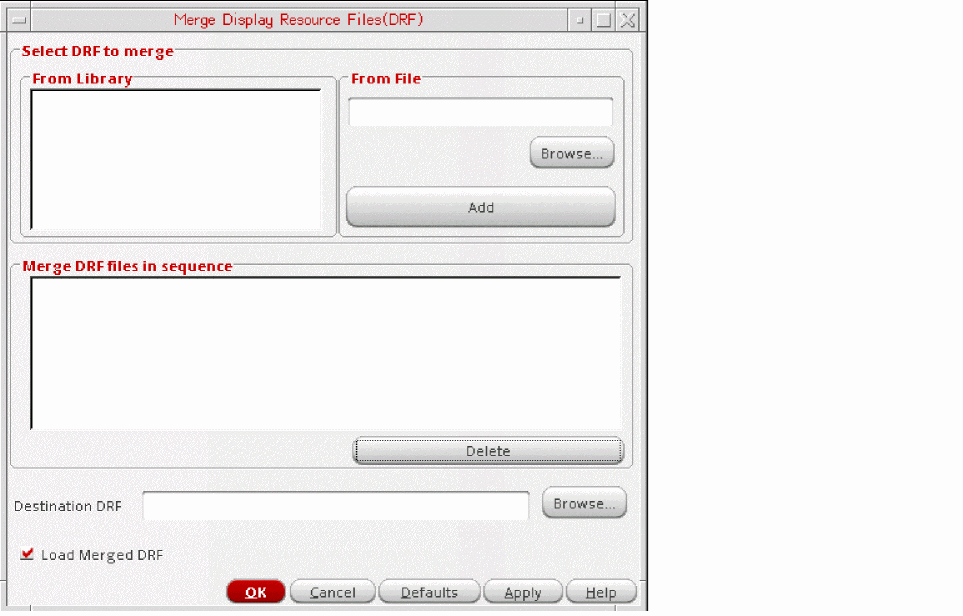 -
Identify the files that you want to merge and the order in which you want to merge them.
-
To select the files to merge, do one of the following for each file, starting with the file that you want to be merged last:
- In the From Library list box, select a library name. The name of the display resource file stored in that library appears in the Merge DRF files in sequence list box, along with the location where it is stored.
-
In the From File field, specify a filename (you can click Browse to select the required file) and click Add. The filename appears in the Merge DRF files in sequence box.
-
In the Destination DRF field, specify the path and the name of the new file.The file must be named
display.drf, and if you want to automatically load this file when you run the software, it must be saved to a location where the DFII initialization process can read it. You must also take into account any otherdisplay.drffiles loaded at the time of initialization. For more information, see How Cadence Design Software Handles Multiple Display Resource Files. -
Ensure that the Load Merged DRF check box is selected (the default) if you want the file to be automatically loaded into virtual memory after the merge operation is complete.
If you do not want to immediately view the results of the merge operation, you can load the file later from the Display Resource Editor. - Click OK or Apply.
Using Display Resource Editor
Display Resource Editor (DRE) lets you edit the display resource data loaded in virtual memory. Depending on your system setup, this data may be a combination of multiple display resource files. For more information, see How Cadence Design Software Handles Multiple Display Resource Files.
In the Display Resources Tool Box form, click Edit to open the Display Resource Editor form.
The
The options shown in the figure below determine the view mode:
- All LPPs: Displays all LPPs defined in the selected technology file, including system-reserved LPPs. If a Palette is open, then the LPP selected in the Palette is automatically selected in the DRE form.
- All Packets: Displays all display packets defined for the selected device.
- All Valid LPPs: Displays all valid LPPs for the selected technology file. If a Palette is open, then the LPP selected in the Palette is automatically selected in the DRE form.
- Active Palette Filtered LPPs: Displays all LPPs displayed in the Palette, in the same sequence. However, the LPP selected in the Palette is not selected automatically in the DRE form.
When the view mode is set to All Packets or Active Palette Filtered LPPs, the name of the active technology library can be determined from the message that appears on the status bar, as shown below.
Accessing Display Resource Data through Display Resource Editor
With Display Resource Editor, You can edit most, but not all, of the display resource data loaded in virtual memory. The following is a list of search and editing functions that you can perform with Display Resource Editor:
- Finding a Display Packet or a Layer-Purpose Pair by Name
- Editing a Display Packet Definition
- Adding a Display Packet Definition
- Editing a Display Packet Definition
- Adding Color
- Editing Color
- Adding a Stipple Pattern
- Editing a Stipple Pattern
- Adding a Line Style
- Editing a Line Style
- Adding a Display Device
The following is a list of functions that you cannot perform with Display Resource Editor:
To perform these functions, you must edit the display.drf file in a text editor or edit the display resource data in virtual memory by using SKILL functions.
After you have edited the display resource data, you can perform the following functions by using Display Resource Editor:
- Loading a Display Resource File in Virtual Memory
- Saving Display Resource Data to a File
- Reloading Source Display Resource Files
Finding a Display Packet or a Layer-Purpose Pair by Name
To find a display packet with a specific name, type the name in the Search text box. As you type each character, the list below is automatically updated to display the packets or layer-purpose pairs that match the search string. Click the Clear button to cancel the filter.
Adding a Display Packet Definition
To add a new display packet definition:
- In the Display Resource Editor form, select the required view mode as All Packets.
- Select an existing display packet, and, in the right pane, select the Fill Color, Outline Color, Stipple, and Line Style attributes that you want to set for the new display packet.
-
In the text box to the left of the Create New Packet button, type a name for the new packet and click Create New Packet.
The new display packet is created and listed in the Packet Name list in the left pane. It is also added to the display resource data loaded in virtual memory.
To save your changes to disk, use the Save As form. For more information, see Saving Display Resource Data to a File.
Editing a Display Packet Definition
Display packets control how layers are displayed and plotted in designs. A display packet can be common to many layers. When you change the definition of a display packet, all layers that use that display packet are automatically updated.
To change a display packet definition loaded in virtual memory, do the following:
- In the Display Resource Editor form, select the required view mode as All Packets.
-
Scroll down the list of packets or use the Search field to locate the required display packet.
The Fill Color, Outline Color, Stipple, and Line Style attributes currently set for the selected packet are highlighted in the right pane.You can also set the view mode to All LPPs, All Valid LPPs, or Active Palette Filtered LPPs to select an LPP, if required. This displays in the right pane the attributes of the display packet used by the selected LPP. Several LPPs can share the same display packet. Therefore, when you change the display packet definition for one LPP, the appearance of all other LPPs that use the display packet is updated. To view a list of LPPs that use the same display packet, click the Associations tab. - Select the required Fill Color, Outline Color, Stipple, and Line Style attributes for the display packet.
-
Click Modify Current Packet.
The display packet definition loaded in virtual memory is updated. The icon for the display packet in the Display Resource Editor is also updated with the newly set attributes. If a cellview is open, it is automatically updated.
To save your changes to disk, use the Save As form. For more information, see Saving Display Resource Data to a File.
Adding Color
To add a new color to the color set, do the following:
-
In the Display Resource Editor form, click Custom in the Fill Color or Outline Color column.
The Color Editor form is displayed, with the current color loaded in the swatch area.
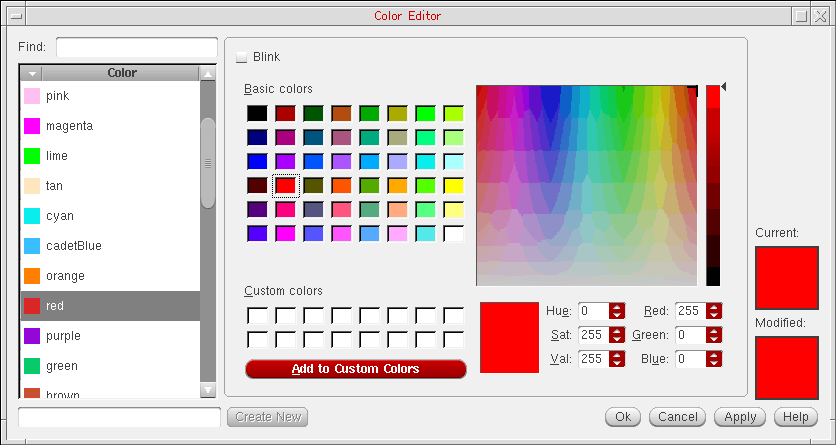If a color does not appear in the swatch area, see Virtuoso Design Environment User Guide for information about mapping colors. -
In the text box to the left of the Create New button, type a name for the new color and click Create New. The new color is listed in the Color list above.
-
Drag the slider up or down, or type in the Red, Green, and Blue fields the required values, to create a new color.
The color corresponding to the specified values is displayed in the Modified swatch area. - Select the Blink check box to make the color a blinking color.
-
Click Apply or Ok.
The new color is listed in the Display Resource Editor form. It is also added to the display resource data loaded in virtual memory.
To save your changes to disk, use the Save As form. For more information, see Saving Display Resource Data to a File.
Editing Color
Fill and outline colors come from the same set of colors. To edit an existing color, do the following:
-
In the Display Resource Editor form, select the required color and click Custom in the Fill Color or Outline Color column.
The Color Editor form is displayed, with the selected color loaded in the swatch area. If a color does not appear in the swatch area, see Virtuoso Design Environment User Guide for information about mapping colors. - Drag the sliders up or down, or type in the Red, Green, and Blue fields the required values, to edit the color. The color corresponding to the specified values is displayed in the Modified swatch area.
- Select the Blink check box to make the color a blinking color.
-
Click Apply or Ok.
The new color is listed in the Display Resource Editor form. It is also added to the display resource data loaded in virtual memory.
If a cellview is open, the layer information in the Palette is automatically updated. To update the cellview, choose View – Redraw. To save your changes to disk, use the Save As form. For more information, see Saving Display Resource Data to a File.
Adding a Stipple Pattern
To add a new stipple, do the following:
-
In the Display Resource Editor form, click Custom in the Stipple column.
The Stipple Editor form is displayed.
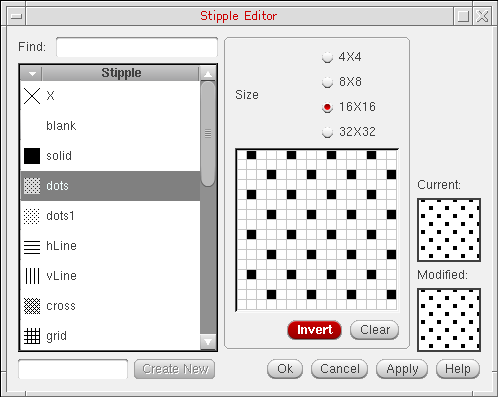 -
In the text box to the left of the Create New button, type a name for the new stipple and click Create New. The new stipple is listed in the Stipple list above.
- From the grid resolutions listed under Size, select the required value.
- Click the pixels in the grid until the Modified swatch area shows the required stipple pattern.
-
Click Apply or Ok.
The new stipple is listed in the Display Resource Editor form. It is also added to the display resource data loaded in virtual memory.
To save your changes to disk, use the Save As form. For more information, see Saving Display Resource Data to a File.
Editing a Stipple Pattern
To edit a stipple, do the following:
-
In the Display Resource Editor form, select the required stipple and click Custom in the Stipple column.
The Stipple Editor form is displayed, with the selected stipple loaded in the swatch area. - Select a grid resolution from those listed under Size, if required, and click the pixels in the grid until the Modified swatch area shows the required stipple pattern.
-
Click Apply or Ok.
The new stipple pattern is listed in the Display Resource Editor form. It is also added to the display resource data loaded in virtual memory.
If a cellview is open, the layer information in the Palette is automatically updated. To update the cellview, choose View – Redraw. To save your changes to disk, use the Save As form. For more information, see Saving Display Resource Data to a File.
Adding a Line Style
To add a new line style, do the following:
-
In the Display Resource Editor form, click Custom in the Line Style column.
The Line Style Editor form is displayed.
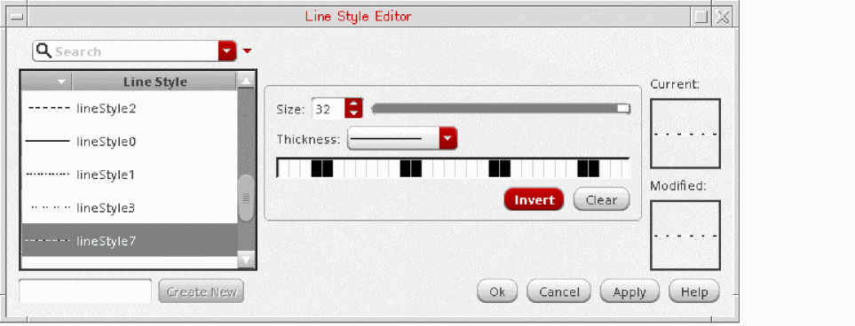 -
In the text box to the left of the Create New button, type a name for the new line style and click Create New. The new line style is listed in the Line Style list above.
- In the Size field, specify the required grid resolution.
- In the Thickness field, specify the required line thickness.
- Click the pixels in the grid until the Modified swatch area shows the required line style pattern.
-
Click Apply or Ok.
The new line style is listed in the Display Resource Editor form. It is also added to the display resource data loaded in virtual memory.
To save your changes to disk, use the Save As form. For more information, see Saving Display Resource Data to a File.
Editing a Line Style
To edit a line style, do the following:
-
In the Display Resource Editor form, select the required line style and click Custom in the Line Style column.
The Line Style Editor form is displayed, with the selected line style loaded in the swatch area. - In the Size field, specify a grid resolution, and in the Thickness field, specify the line thickness, if required, and click the pixels in the grid until the Modified swatch area shows the required line style pattern.
-
Click Apply or Ok.
The new line style is listed in the Display Resource Editor form. It is also added to the display resource data loaded in virtual memory.
If a cellview is open, the layer information in the Palette is automatically updated. To update the cellview, choose View – Redraw. To save your changes to disk, use the Save As form. For more information, see Saving Display Resource Data to a File.
Adding a Display Device
A display device is a piece of hardware, such as a monitor or a plotter, which you use to display, plot, or print designs. You can define a display packet to appear differently on different display devices. The table below lists commonly used display devices.
For information about setting up plotters, refer to the Plotter Configuration User Guide.
| Device Name | Type |
|---|---|
To add a display device, do the following:
-
From the Device list, choose Add New.
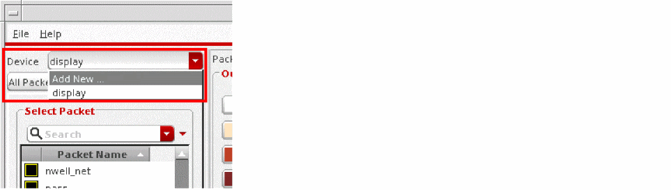 -
In the text box that is displayed, type the new device name.
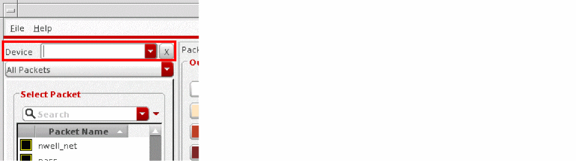 -
Press
Enter.
The new display device is added to the Device list and set as the active device.
To save your changes to disk, use the Save As form. For more information, see Saving Display Resource Data to a File.
Deleting Display Resources
You must always exercise caution while deleting display resources because the display resource that you delete could be in use in multiple technology libraries and designs.
Deleting Colors, Stipples, Line Styles, and Devices
Before you delete a display resource such as a color, stipple, or line style, consider the following:
- Display packets are defined by a set of display resources. If you delete a display resource, the display packets using that display resource become invalid, as do all the layers that use those display packets. To preserve affected display packets, you must update the display packet definitions to include an existing display resource.
- Because the system merges several source display resource files to create the display resource data you use, the color, stipple, or line style resource that you want to delete may exist in more than one source display resource file. It might even be defined differently in different source files. To completely delete the display resource, you must delete it from all source display resource files.
You can create display resource files in your home directory for personal use. If the data in these files overwrites the default data, you may need to delete these personal display resource files and reinitialize the display resource data.
Finding Display Packets Affected by Deleting a Display Resource
To determine which display packets are affected by deleting a display resource, do the following:
- Save all the display resource data currently loaded in virtual memory. For more information, see Saving Display Resource Data to a File.
-
In a text editor, open the file that you just created and search for the name of the display resource that you want to delete.
The following figures show samples of display resource definitions: -
Search for the display resource name again to locate a display packet definition that uses the display resource.
A display packet definition
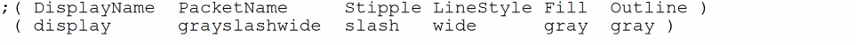 - Note down the name of the display packet.
- Repeat steps 6, 7, and 8 until you have located all the display resource definitions that use the display resources that you want to delete.
- Exit the text editor.
Deleting a Display Resource from a Display Resource File
Do the following for each source display resource file that you want to edit.
- In a text editor, open the display resource file.
- Search for the name of the display resource to delete.
-
Delete the definition of the display resource.
For example, to delete thewideline style, delete the definition starting from the opening parenthesis through the closing parenthesis.
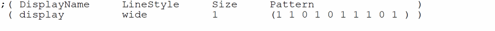 -
For each display packet that uses the display resource just deleted, replace the deleted display resource with an existing display resource.
For example, you may want to replace thewideline style with thesolidline style, as shown below:
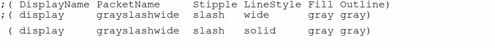For information about locating all such display packet names, see Finding Display Packets Affected by Deleting a Display Resource. - Save the file and exit the text editor.
- Repeat this procedure for all display resource files from which you want to delete a display resource.
-
Broadcast your changes to all users of your design hierarchy.
The following is a sample broadcast message:
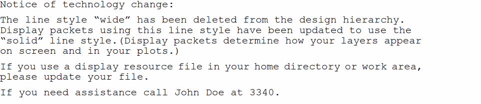
Deleting a Display Packet
Technology files reference display packet names. Therefore, before you delete a display packet, ensure that your technology files do not reference that display packet. As a precaution, consider leaving unused display packets in your display resource file for later use.
-
If you are sure about deleting a display packet, open the source display resource file in a text editor and delete the required display packet definition.
To refresh the display resource data during a design session, rerun the software, or, in the Display Resource Editor, choose File – Reinitialize. For more information about reinitializing display resource data, see Reloading Source Display Resource Files.
Loading a Display Resource File in Virtual Memory
When you load a display resource file, the data in the file is merged with the data that is already loaded in virtual memory. To merge additional display resource data with the display resource data in virtual memory, perform the following steps:
-
In the Display Resource Editor form, choose File – Load.
The Open form is displayed.
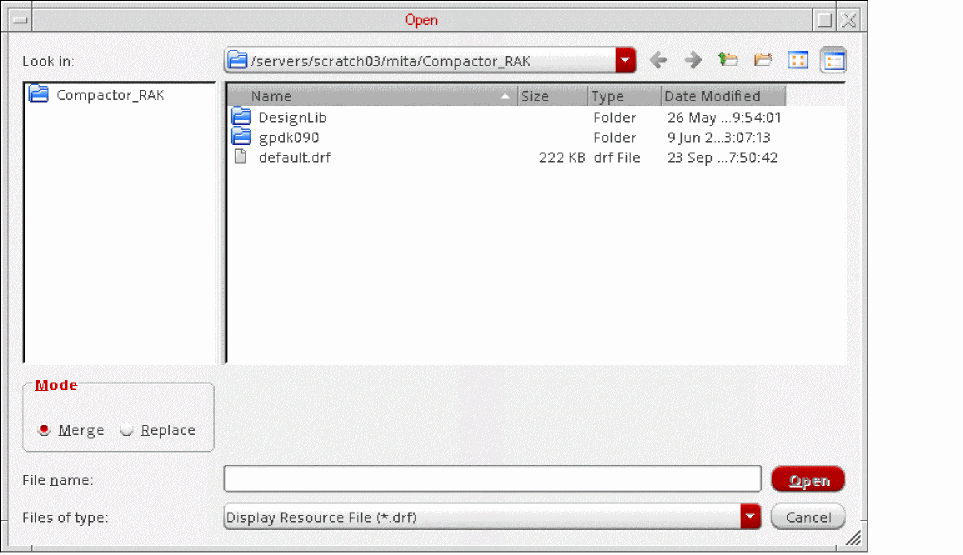 - Select a file to load.
-
In the Mode group box, choose Merge.
To replace the display resource data in virtual memory, choose Replace. -
Click Open.
The selected file is loaded into virtual memory and Display Resource Editor is updated with the display resource data from the selected file. If a cellview is open, choose View – Redraw to update the cellview.
However, if you have any unsaved changes, you are prompted to save your changes first. For more information about how to save the changes made to the display resource data in virtual memory, see Saving Display Resource Data to a File.
Saving Display Resource Data to a File
You can save the display resource data loaded in virtual memory to a text file that you can use in future sessions. Additionally, you can save either all the display resource data or only the changes that you made during a design session. To use the new display resource file in a design session in future, you can place the file in your home directory or in the directory from which you run the software. By placing the customized display resource data in your home directory, you have control over how your designs appear on screen and in plots.
To save to a file the display resource data currently loaded in virtual memory, do the following:
-
In the Display Resource Editor form, choose File – Save.
The Save As form is displayed.
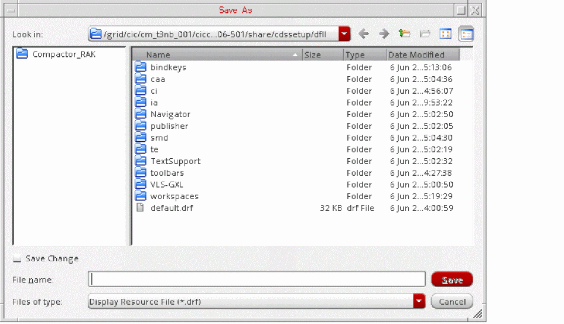 - Select the directory to which you want to save the file, and in the File name text box, specify a name for the file.
- Ensure that the Save Change check box is deselected if you want to save all the display resource data currently loaded in virtual memory. To save only the display resource data modified during the current design session, select the Save Change check box.
-
Click Save.
A display resource file with the specified name is created.
You can now do one of the following:
- Edit the saved file. For more information, see Editing a Display Resource File.
- Add the file to a location from which the file is automatically loaded every time you run the software. For more information, see How Cadence Design Software Handles Multiple Display Resource Files.
- Load the file manually. For more information, see Merging Display Resource Files.
- Discard the edits made during the current session by reloading the original display resource data. For more information, see Reloading Source Display Resource Files.
If you did not save your changes while exiting Display Resource Editor (or if you made changes using SKILL functions), the Save Display Information form, shown below, is displayed when you exit Virtuoso. Type a filename in the File Name field and click OK to save your changes, or click Cancel to discard your changes.
If you do not want this form to be displayed when you exit Virtuoso, set the drmSuppressSaveDialogBox to t in the CIW, as shown below. As a result, any changes that you have made are automatically discarded.
envSetVal("layout" "drmSuppressSaveDialogBox" 'boolean t)
The default value of this environment variable is nil. You can also include it in the .cdsenv file in your home directory or in the .cdsinit file.
Reloading Source Display Resource Files
If you modified the display resource data in your current design session and now want to reload the data you started with, do the following:
- In the Display Resource Editor, choose File – Reinitialize.
-
In the dialog box that is displayed, click OK.
The source display resource files on disk are loaded into virtual memory in sequence. For more information, see How Cadence Design Software Handles Multiple Display Resource Files.
Setting Selection Display Colors and Dynamic Highlights
You can specify different colors to distinguish between selected and unselected objects on the same layer. You can also choose to specify the dynamicHilight display packet to dynamically highlight objects in the design.
Setting Selection Display Colors
If the useSelectDeviceForSelectionDisplay environment variable is set to t, the select and hierSelect devices, if defined, determine the display attributes of the selected objects. The hierSelect device lets you use different display packets for hierarchical objects such as instances and vias. The default value of this environment variable is nil.
envSetVal("graphic" "useSelectDeviceForSelectionDisplay" 'boolean t)
If the environment variable is set to t, but the select and hierSelect devices are not found, the default display device is used. You can add the select and hierSelect devices either by using the Display Resource Editor form or by including them in the drDefineDisplay section of the display.drf file.
Setting Dynamic Highlights
If you set the useDynamicHilightPacket environment variable to t, a packet named dynamicHilight, which determines how dynamic highlights around objects appear, is automatically created when you first dynamically highlight an object. However, this packet is not saved automatically in display.drf.
envSetVal("graphic" "useDynamicHilightPacket" 'boolean t)
If you save this packet, it is available in Display Resource Editor even when the environment variable is set to nil.
The useDynamicHilightPacket environment variable is also defined in the "layout" partition. As a result, the appearance of the dynamic highlights in layout windows can be different from that in other graphic applications.
envSetVal("layout" "useDynamicHilightPacket" 'boolean t)
The default value of this environment variable is nil.
Editing Display Resource Data with SKILL Functions
The following table lists the SKILL functions that return information and operate on display resource data:
For more information about these SKILL functions, see Virtuoso Technology Data SKILL Reference.
Editing a Display Resource File
You can edit in a text editor a display resource file, which you had saved earlier, to retain only the customized display resources. For this, do the following:
- Create a backup copy of the file.
- In a text editor, open the original copy of the file.
-
Insert comments in the file to keep a record of the reason for customization and the details of the customized data, as shown below:
; Created 1/24/15 for Emerald project. ; Changed red color to look tan.
- Delete all lines except those defining the display resources that you had customized. You can choose to preserve the original display device, color, stipple, line style, and display packet definitions as comments.
- Save the changes and exit the text editor.
- Test the customized resource data file. For more information, see Testing a Display Resource File.
-
After verifying that the customized display resource definitions work as expected, do one of the following:
- Paste the customized display resource definitions into a source display resource file. For more information, see How Cadence Design Software Handles Multiple Display Resource Files.
- Place the file in your home directory or work area directory.
As a result, your changes are automatically loaded every time you run the software.
Testing a Display Resource File
To test a display resource data file, do the following:
- In the Display Resource Editor form, choose File – Reinitialize.
-
In the dialog box that is displayed, click OK.
The source display resource files on disk are reloaded into virtual memory in sequence. For more information, see How Cadence Design Software Handles Multiple Display Resource Files. -
Choose File – Load.
The Open form is displayed. - In the File name field, type the name of the file that you edited.
-
Click Open.
If there are errors in your file, messages are displayed in CIW and in thetechManager.logfile. - Open a cellview and look for objects that use the customized display resources.
Return to top